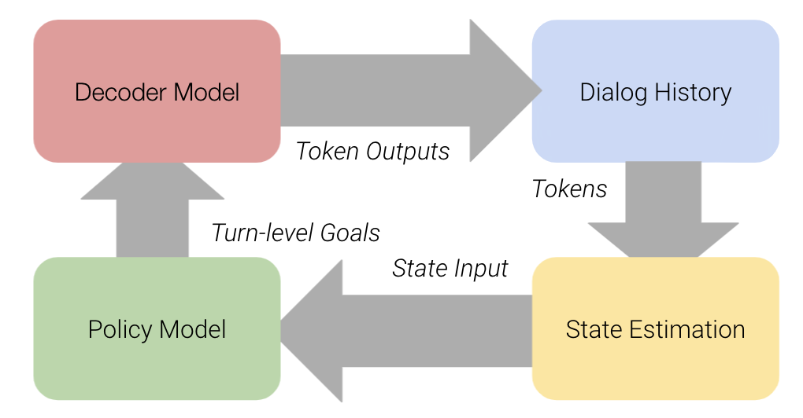
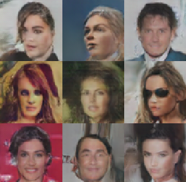

Fengyi TangI am a ML engineer currently working on recommendation systems at Meta. Previously, I worked as an applied scientist in the product analytics space at Amplitude Analytics. My work interests include applying reinforcement learning, and causal inference workflows on real world data. Personal interests include agent-based modeling and Bayesian data analysis. Email / CV / Google Scholar / Github |
|  |
Convogym: A gym environment to train chatbots
A Python library for simulating conversations between open-domain chatbots. There are currently 3 different gym environments: Gym (base class), ActiveGym (for active learning new turn-level goals), and RLGym (use reinforcement learning to learn dialog-level goals) This was a hobby project that started during my PhD and is actively maintained by me. Code / PyPI / Sep 16, 2021 |
|  |
PersonaGPT: An open-domain conversational agent with many personalities
A persona model capable of generating personalized multi-turn dialogs, given a set of personality traits. Also capable of decoding customized responses given 11 different directions of conversation (controlled decoding). Code / Model Card / Oct 12, 2020 |